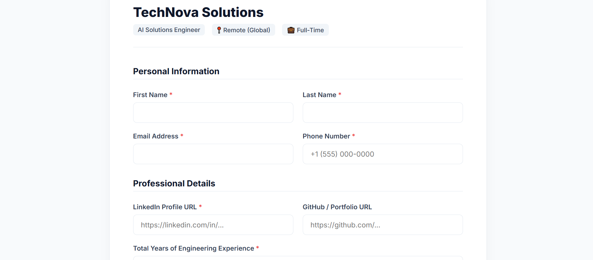

Automated the Work The Recruiter Was Doing.
Not a concept. A fully working automation pipeline — resume screening, AI voice interviews, automated decisions. Built to understand how far this actually goes.
AN END-TO-END HIRING AUTOMATION PIPELINE
It started with a question I couldn't shake: how much of a real hiring workflow can already be automated today? I looked at early-stage recruiting — not because it seemed easy, but because it seemed genuinely hard. Judgment. Communication. Pattern recognition across hundreds of candidates.
So I tried breaking it down, step by step. a job application frontend, an automated resume screener in n8n, a voice-based interview flow running on Llama 3 with real-time speech, and a grading workflow that sends the hiring manager a one-click decision. No manual intervention in the early pipeline. Just systems talking to systems.
FOUR STEPS. FULLY AUTOMATED.

.png)
.png)
.png)
THE STACK
| Tool | Role in Pipeline | Handles |
|---|---|---|
| n8nAutomation | Orchestrates the full workflow, connects all services | Recruiter coordination & routing |
| GPT-4o-mini | Resume scoring + interview grading | CV screening & evaluation |
| Llama 3 8BLocal LLM | Conducts live technical interview via voice | Phone screen & technical interview |
| faster-whisper | Transcribes candidate speech in real time | Listening & note-taking |
| edge-tts | Converts AI responses to natural voice | Voice interaction with candidates |
| FastAPI + ngrok | Serves interview webapp from Colab GPU | Interview infrastructure |
| Gmail (n8n) | Automated invite, rejection, and offer emails | Candidate email communication |
THIS IS A DEMO. NOT PRODUCTION.
⚙ What this build intentionally skips
This is a proof-of-concept built for demonstration and awareness purposes. I built it to show that the technology is real, accessible, and already deployable — not to hand it to an enterprise tomorrow. A production-grade system would need significantly more: bias auditing and fairness testing, compliance with employment law (GDPR, EEOC, local labour regulations), human-in-the-loop review at every decision gate, candidate consent flows, data retention policies, appeal mechanisms, and extensive reliability testing. Colab T4 GPUs are not production servers. ngrok tunnels are not production infrastructure. The score threshold is hardcoded. The model can hallucinate. This demo is honest about all of that.
I built this as a single developer over a weekend using free and open-source tools. That's the point. The barrier to building something like this is almost nothing. Which means the timeline is much shorter than most people assume.
Most early-stage hiring workflows are already very close to being automated. Not overhauled overnight — but quietly, incrementally handled by systems. And the uncomfortable truth is that this experiment showed me exactly how close we already are.
I CAN BUILD THIS
FOR YOUR ORGANISATION
Need a custom hiring automation pipeline? I build agentic automation workflows using n8n, open-source LLMs, and cloud infrastructure — tailored to your hiring process, your compliance requirements, and your stack.
Custom Screening Logic
Job-specific scoring criteria, multi-stage filtering, team-specific rubrics.
Compliance-Ready
Human review gates, audit trails, bias monitoring, and GDPR-compliant data flows.
Integrates Your Stack
Works with your ATS, Slack, email, calendar, and HR tools via n8n connectors.
Voice or Text Interviews
Real-time AI voice interviews or async video — your candidate experience, your rules.
Manager Dashboards
Ranked shortlists, AI-generated summaries, red flag detection, one-click decisions.
Rapid Deployment
From brief to working prototype in days. I move fast and document everything.